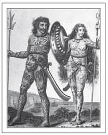

Dövmeler
1884’te sınıf arkadaşlarına dövme yaptığı için okuldan atılan “Dövmeciler kralı” George ‘Profesör’ Burchett, müşterileri arasında Kraliçe Victoria’nın olduğunu asla iddia etmedi. Ancak Victoria’nın torunu Kral V. George’a, Danimarka kralı IX. Frederick’e, İspanya kralı XIII. Alfonso’ya dövme yapmıştır. Anılarında kraliçenin 22 Ocak 1901’deki ölümünün ardından “Kraliçe’nin Anısına” yazdığı hatıra dövmelerini yetiştirebilmek için nasıl gece gündüz çalıştığını anlatır.
Dövmelerin tarihi insanlığın ilk zamanlarına dek uzanır. En eski renkli dövmelere 5000 yıl önce ölmüş bir Taş Devri erkeğinde ve 4000 yıldan eskiye dayanan eski Mısırlı bir Hathor tanrıçası rahibesinde rastlanmıştır. Genellikle kölelerle bağdaştırılmasına rağmen dövme Antik Yunan’da yaygındır. Kimi zaman Anglosakson krallarının da dövmeli olduğu iddia edilir.
Bazen dövmelerin cinsel anlamları olurdu. Özellikle de kabile grupları arasında doğurganlığı artırmak ya da kısırlığı önleyecek bir muska olarak kullanılırlardı. 20. Yüzyıl başlarında Cinsellik Psikolojisi Çalışmaları’nı yazan davranışçı psikolog Havelock Ellis, dövme fetişistlerinden bahseder. Penisine kelebek dövmesi yaptıran bir adam şöyle anlatır: “Dükkandan çıktıktan birkaç dakika sonra öyle müthiş bir ereksiyon ve boşalma yaşadım ki sonrasında neredeyse yorgun düştüm.”

Bedenleri resimlerle kaplı Piktler16
Keşif yolculukları, dövmeciliği Avrupa’ya yeniden tanıtır. Sör Martin Frobisher Kuzey-Batı geçidinin peşindeki yolculuğundan üç eskimoyla döner. Bir erkek, bir kadın ve bir çocuktan oluşan bu küçük grup, özellikle de kadının alnında ve çenesindeki dövmeler sebebiyle Kraliçe Elizabeth’in sarayında büyük ilgi görür.
Dövme (tattoo) sözcüğü İngilizce’ye Tahiti dilindeki ‘tatau’dan geçmiş ve fikir, James Cook’un botanikçisi Sör Joseph Banks ve birçok denizci Güney Pasifik’teki yolculuklarından dövmeleriyle övünerek döndüklerinde tutulmuştur. Böylece dövmeciler, özellikle liman bölgelerinde çalışmaya başlamıştır.
19. Yüzyıla geldiğimizde, kral ve devlet başkanlarının öncülüğünde dövmeler Avrupa’nın dört bir yanındaki üst sınıflar arasında popüler hale gelmiştir. Winston Churchill’in annesi Lady Randolph Churchill’in bileğinin etrafında, gerektiğinde özel tasarlanmış elmas bir bilezikle gizlediği bir yılan dövmesi vardır. Churchill’in dirseğiyle bileği arasında da bir çapa dövmesi bulunur.
16 Piktler: geç dönem Demir Devri’nde ve Ortaçağ’ın başlarında doğu ve kuzey İskoçya’da yaşamış antik bir halktır. (ç.n.)